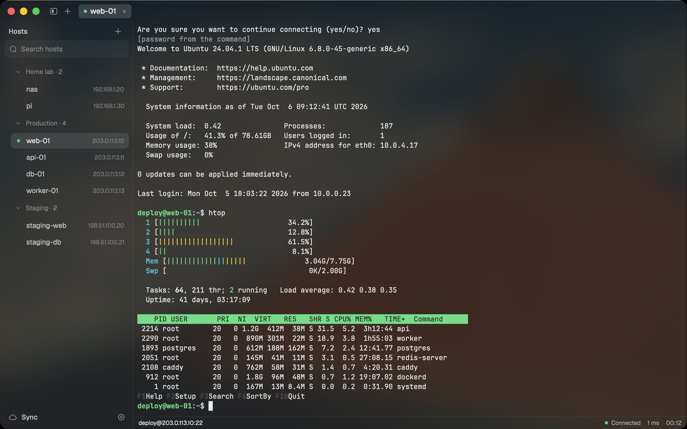
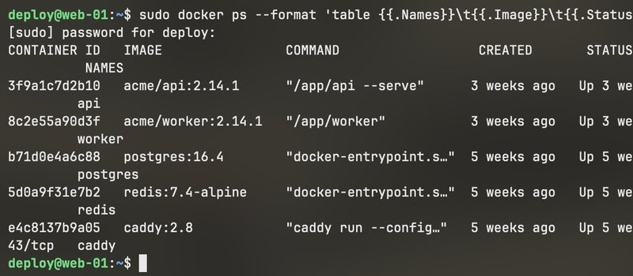
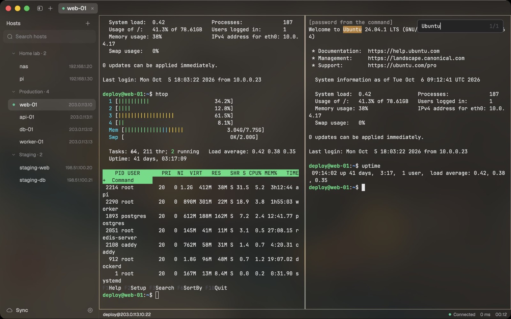
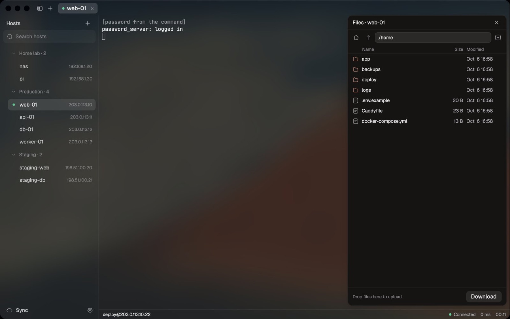
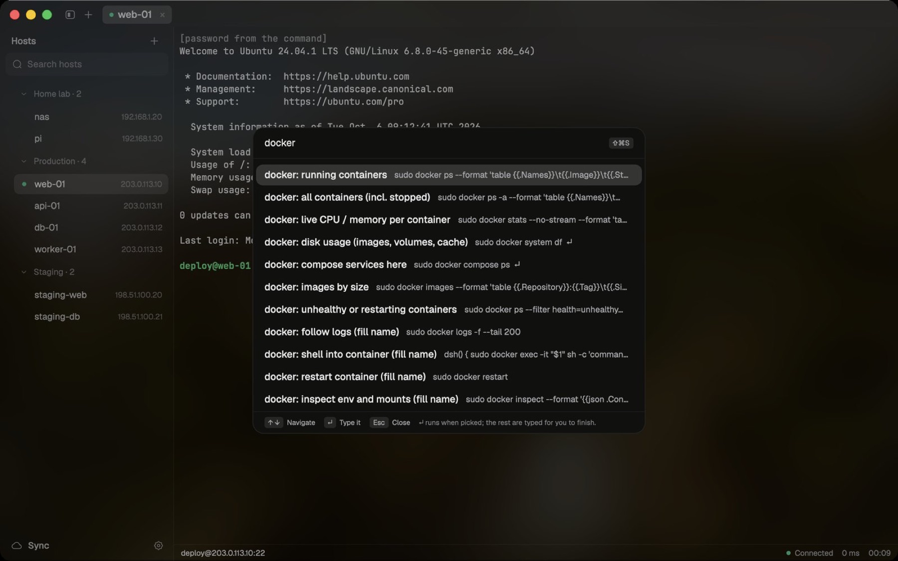

v0.1.0 · signed and notarised
A fast, native SSH client for macOS. Your servers one click away, sudo passwords filled with ⌘\, and your setup synced, encrypted, to your own Git repo.
macOS 11+ · Apple silicon · Free and open source (GPL-3.0)

Passwords that stay out of the way
Logins come from your SSH key, your password manager (any command, like op read … or pass show …), or tern's encrypted vault.
At a sudo prompt, press ⌘\ and tern types it. Never on its own.

Connected, settled at two minutes
Light on memory
One native process, no browser engine. Measured with macOS footprint, method in docs/perf.md.
Built for real work
Split panes, find in scrollback, SFTP, port forwards, ProxyJump, broadcast input, session logs, automatic reconnect.



Your setup, backed up
Hosts, snippets and settings sync to a Git repo you own, encrypted with your vault passphrase before they leave the Mac.
Your Mac
age-encrypted
Your private Git repo
Download tern.
Signed with a Developer ID and notarised by Apple.